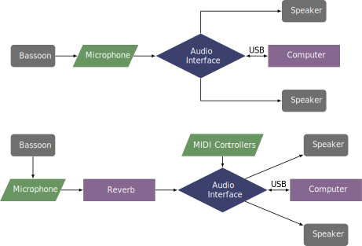

This piece was composed in 2009 and was premiered by Ryan Hare at the Festival of Contemporary Art. The piece is published by the American Composers Alliance and can be obtained through their website.
This piece was written for a separate performer to operate the electronics part. There are four sections in the piece where this person must slowly drag a slider down in the patch. There are also start and stop buttons to press at the beginning and end of the piece. Another version of the patch can be controlled via MIDI controllers. It is designed to listen to controllers 2, 3, 4, and 5 to control the four sliders. There is no MIDI control for the start and stop buttons, which would be necessary for a completely independent performance. However, this would be relatively easy for the performer to add with a different controller. The performance instructions indicate that the bassoon should be amplified and given approximately two seconds of reverb. This is in addition to the processing of the patch. This could be done with a reverb pedal, adding reverb to the Max patch, or perhaps with the effects of a mixer.
Two possible setups for this piece are shown below. 
The patches for versions with and without MIDI controls are shown in the screenshots section. In both cases, the start button needs to be pushed after the first two notes in the bassoon part. Then when the score designates it, either the sliders need to be gradually dragged or the MIDI controller gradually moved until the arrival point in the score. Finally, at the end of the piece, the stop button needs to be pushed.
This piece is on the album Robert Carl: From Japan by New World Records, and can be purchased here.
This piece is most difficult in its range, which is generally at the higher end of the instrument, reaching high E. Since the electronics part is just a pedal tone, there is no difficulty keeping up with the electronics. The piece has no meter and is very free. Overall, if the student has good range, this piece would be suitable for an introduction to interactive electronic music.
In the performance notes, the composer describes the bassoon part as emerging from the harmonic overtones of the pedal note. It doesn't really have a sense of tonality, but it is not free atonality either. There are a few glissandi and bends, but is a fairly accessible piece.
©2025 by Benjamin Bradshaw
Logo ©2025 by Hannah Bradshaw